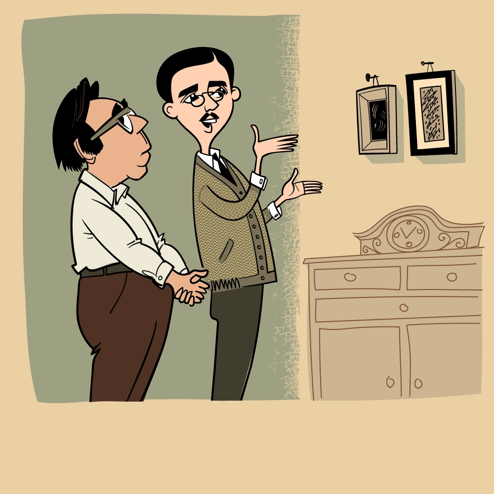
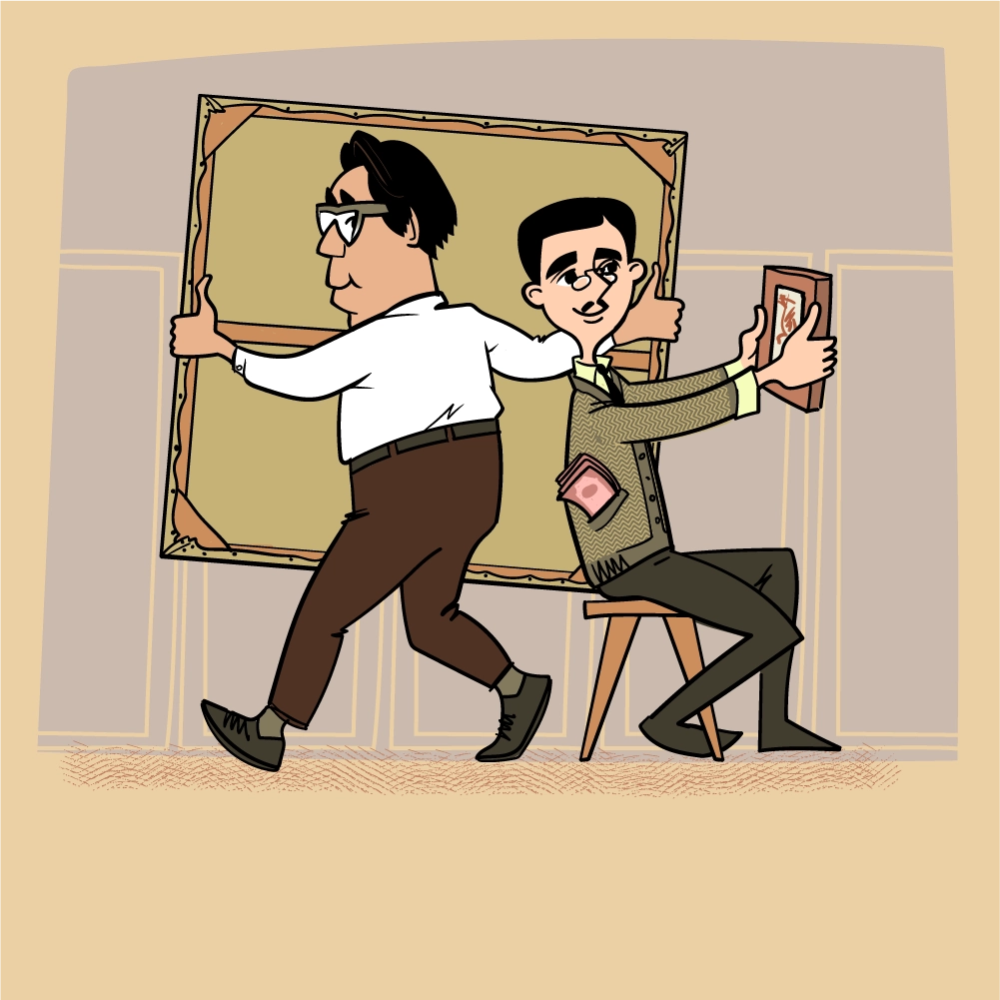
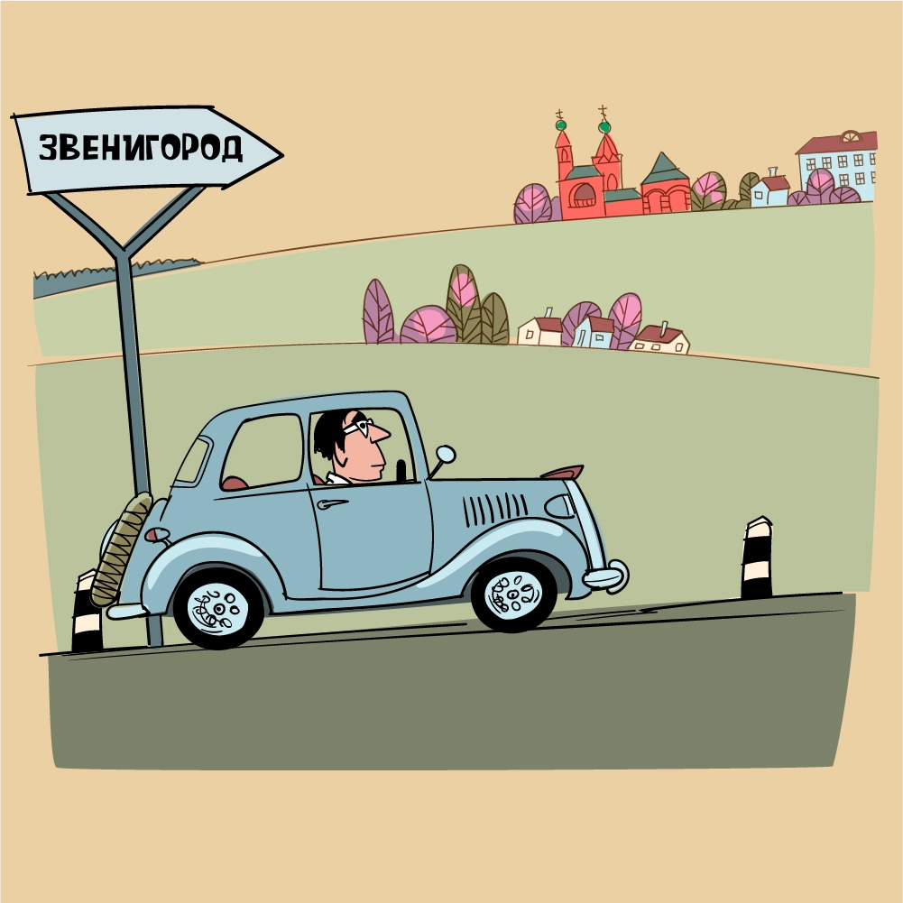
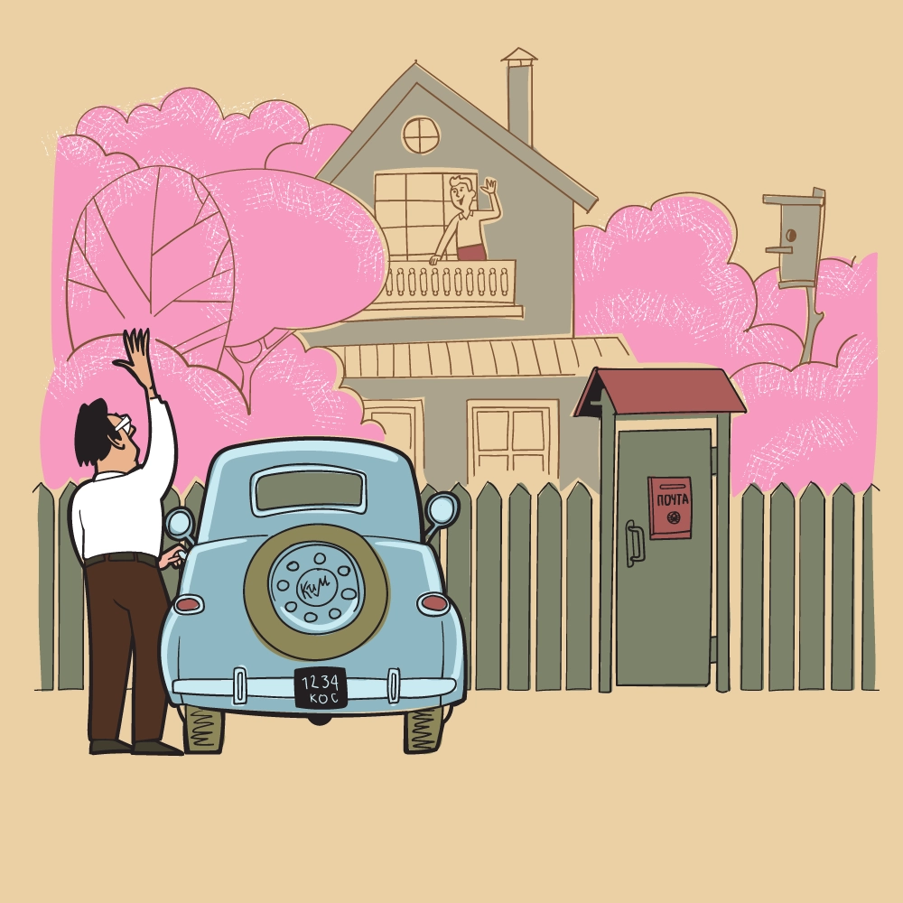
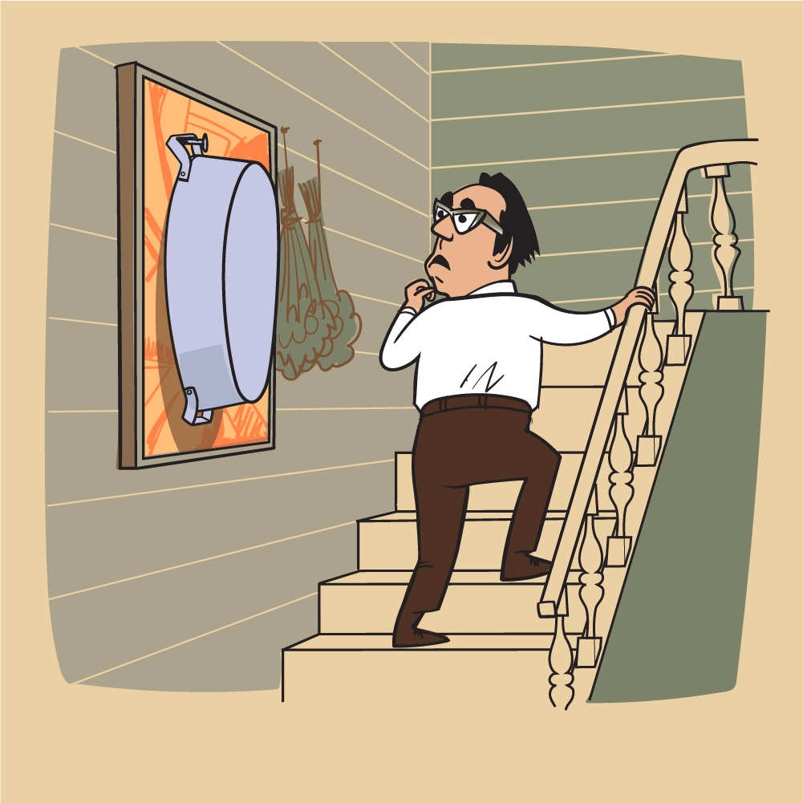
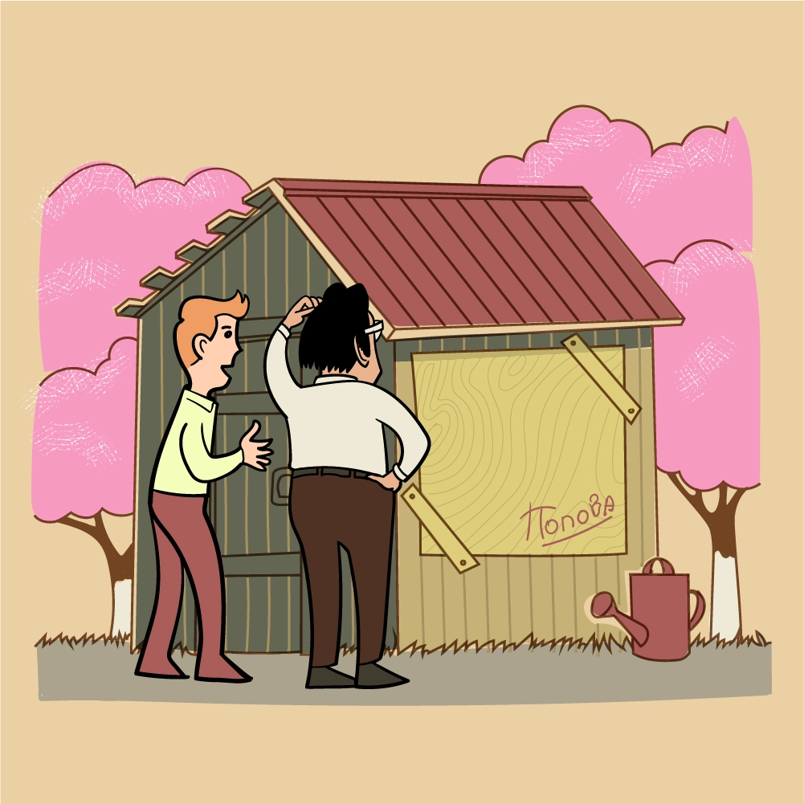
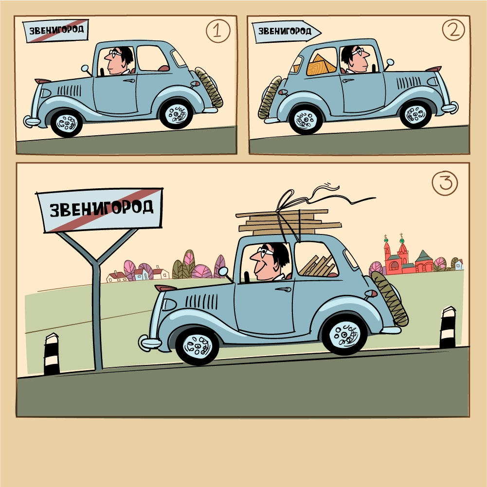

At first, I managed to get two paintings by Lyubov Popova, then the thread broke, and it was only by chance that I got back on the right track.
Popova died in 1924, after which I met her brother Pavel Sergeievich Popov, a university professor, a very handsome, tall gentleman. He lived on the Arbat street, in one of the alleys, in a large apartment. In the room where he received me, I saw two small paintings by Popova.
I said that I had heard a lot about his sister. He answered: “Yes, you know, she died early, but I still have some of her works”. I said I was collecting her works and wanted to buy them from him. And he replied: ”Why not? I’ll show you”. He led me into another room, where 10-15 canvases were stacked. All first-class! And I bought them.
Pavel Sergeievich parted with small canvases with great difficulty. When I told him that I wanted to buy a small one too, he did not agree: “I will leave this one, because it is small, you can always hang it, but the big ones... What shall I do with them?”
Pavel Sergeievich had a stepson who lived in Zvenigorod. Pavel Sergeievich once suggested me to visit him because he assumed that some paintings of his sister might have remained there. So I went …
Country house, large garden. It was just the time of flowering — pink and white apple trees, cherries. I was welcomed very friendly.
And the first thing I saw when I climbed the stairs to the second floor was Popova’s painting - there was a craft hanging on it...
Then we walked around the garden. And I saw the window of the barn, nailed with a plywood. The signature could be read on the plywood: “Popova”.

I went into the barn and saw that on the back of the plywood there was a beautiful work by the artist. I immediately offered to sell it to me, but the owner of the house replied: “No, I can’t, if it rains, everything in the barn will get wet. First, bring me the plywood, and then I’ll give you the painting”.
I had to go to Moscow to look for plywood. I didn’t find the right piece, so I bought two smaller ones and brought them to Zvenigorod.
Help Costakis get a painting by Lyubov Popova into his collection!
In exchange, the owner gave me the wonderful painting. He also sold the rest of the paintings to me very cheaply.
Thus, I acquired most of Popova’s works from the family of the artist.